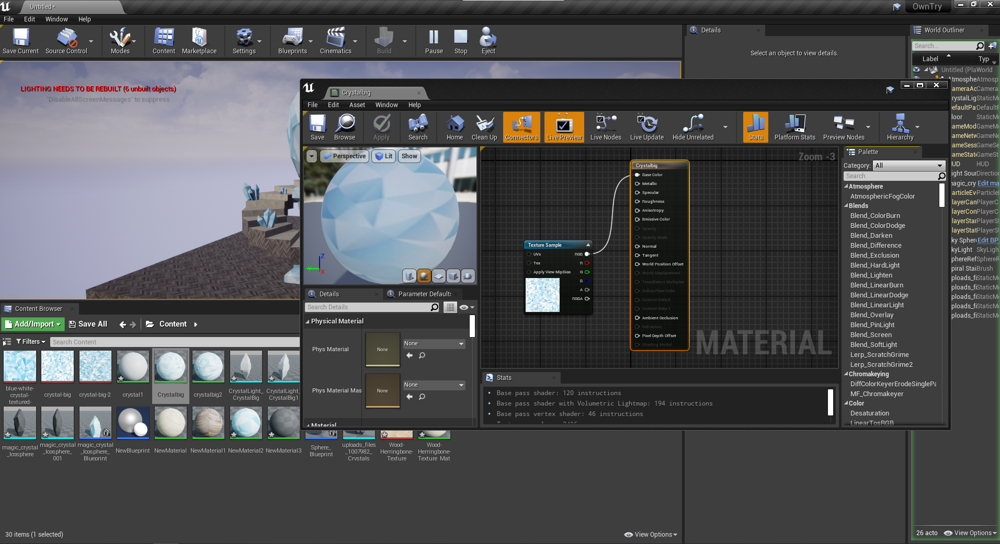

Unreal Engine
Follow the tutorial and make a banana turn!
The tutorial explains the basics of Unreal Engine. It starts about how to navigate the software and what every window means. Although the windows feel overwelming in the beginning, later in the process you tend to ignore the screens you don't actively use that moment.

After this critic step of getting to know the software we moved on to adding the model and texture step by step. Creating a texture model and adding a picture that fits the object causes it to look realistic. Although it renders perfect, it does make me wonder how difficult it must have been to make this texture.
Once the model was finally done you learn about how nodes and their connection work. To make the model turn we only need 2 steps, the Event Tick which indicates the start and the Local Rotation. Local Rotation asks you what value you want to turn and by giving Z the value of 1 it spins around on it's Z axe.
End result

Play around with Unreal Engine
I started of by looking for what the progam itself had to offer. After that I picked the staircase and searched online for great shapes to add. I decided to use crystals and have a big crystal float and turn around in the middle of the stairs. Due to the difference in sized I searched for 3 different sizes and details of crystal texture to add to the models.
Adding these pictures which would form a great pattern to texture models
To get the crystal in the middle turning I used the same blueprint as in the tutorial but slowed it down to 0.5 Z to make it feel more natural.
End result